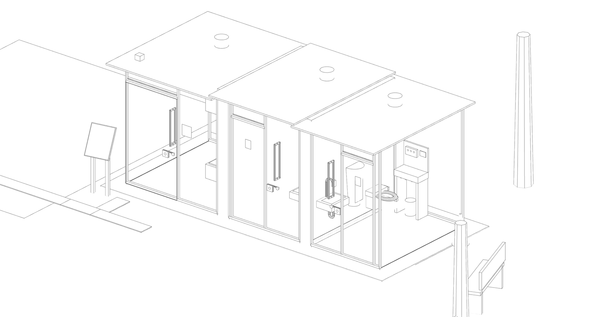
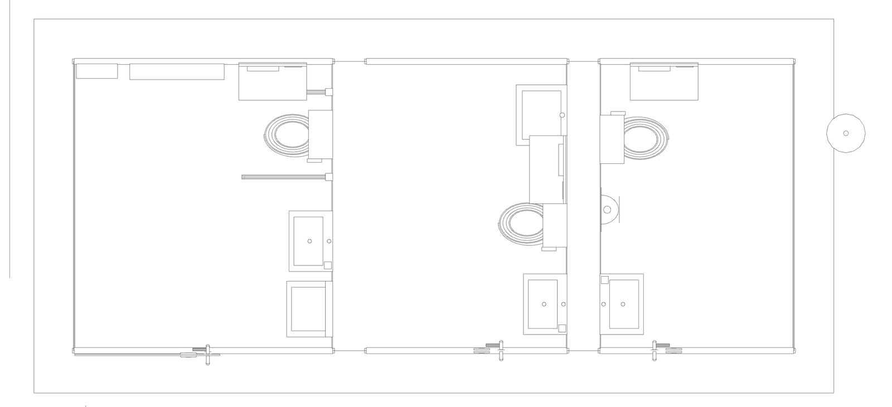
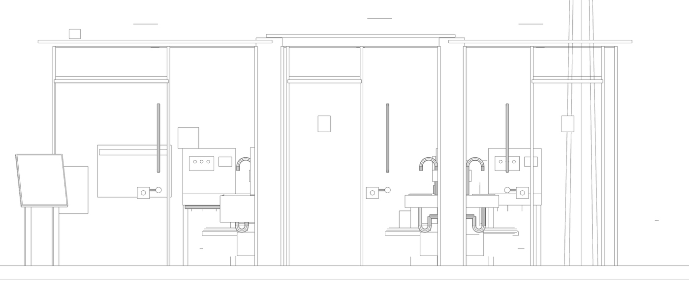
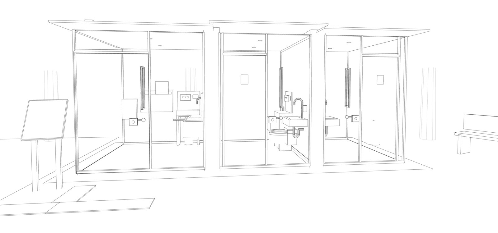

Work 002 · Seen Through · 2026 · Pretest v2.0
不透明，就等於安心嗎？Is opaque the same as safe?
一個用手機 3D 模型進行的公廁知覺調查：同一間廁所，只改變外牆「看不看得到」，看人們的隱私感與安全感怎麼變化。 A phone-based 3D study. One toilet, one change: whether its walls can be seen through, and how that shifts people’s sense of privacy and safety.

進去前看得見，上鎖後看不見See in before you enter; unseen once you lock
坂茂設計的春之小川社區公園公廁，外牆是彩色玻璃。沒人使用時可以從外面看進去，確認裡面乾不乾淨、有沒有人；進去上鎖，玻璃就變成不透明。 Shigeru Ban’s toilet in Haru-no-Ogawa Community Park has coloured glass walls. When empty you can look in to check that it is clean and that no one is inside; once you lock the door, the glass turns opaque.
- 設計 Design
- 坂茂Shigeru Ban
- 地點 Site
- 東京都澀谷區代代木 5-68-1，はるのおがわコミュニティパークYoyogi, Shibuya, Tokyo
- 計畫 Program
- THE TOKYO TOILET
- 施工 Built
- 2020.03–2020.07 · 大和ハウス工業 · 鋼骨造 steel frame
- 面積 Area
- 14.16 m²
- 配置 Booths
- 多功能廁所、女廁、男廁All-gender accessible, women’s, men’s
設計者的兩個主張，各自成立嗎？Do the designer’s two claims hold?
坂茂的想法是：進去前看得見，比較安心；上鎖後看不見，保有隱私。Akdağ（2026）用平面計算比較東京 17 間公廁，坂茂設計的兩座透明公廁隱私指數最低，但作者也指出，平面分析看不到玻璃材質帶來的感受，需要使用者驗證。本研究用三組比較來回答： Ban’s reasoning: seeing in first feels safer, and turning opaque keeps you private. In a plan-based analysis of all 17 Tokyo toilets, Akdağ (2026) found Ban’s two transparent toilets had the lowest privacy index, and noted that plan geometry cannot capture what the glass feels like, so users need to be asked. Three comparisons:
上鎖後變霧，真的保護了隱私嗎？Does turning opaque on locking protect privacy?
進去前看得見裡面，會比較安心嗎？Does seeing in before entering make people feel safer?
「看不見」就等於「安心」嗎？Is “cannot see” the same as “feel safe”?
從平面到空間From plan to space
模型依公開平面圖與現場照片建立：平面給隔間、門寬與設備位置，照片補上高度、玻璃分割與細部。座標以公尺為單位，站姿眼高 1.55 m、坐姿 1.17 m，所以受試者在手機上看到的距離與角度，對應到現場。下面四張線稿都由同一個模型直接輸出。 The model is rebuilt from the published plan and site photos: the plan gives partitions, door widths and fixtures; photos add heights, glazing and details. Units are metres, with eye heights of 1.55 m standing and 1.17 m seated, so distances and angles on the phone match the site. All four drawings below are exported from that one model.



幾何依平面與照片重建，未經現場實測；女廁兩側鏡面依 K2・PLAN 見學紀錄（2020）。 Geometry is reconstructed, not measured on site. The mirrors in the women’s booth follow the K2・PLAN site-visit record (2020).
四種視覺邊界Four visual boundaries
受試者選一間廁所，在同一間依平衡順序體驗四種狀態。只有外玻璃牆與門扇改變，幾何、設備、門鎖都相同；不比較材質，不透明狀態是素面淺灰牆。 Each participant picks a booth and experiences four states there in a balanced order. Only the outer glass and door leaf change; geometry, fixtures and the lock stay the same. No material comparison: the opaque state is a plain light-grey wall.
O一直不透明
進去前、上鎖後都看不見Always opaque
F一直霧面
透光但看不清楚Always frosted
A上鎖才變霧
真實設計Clear, then frosted on locking · the real design
D一直透明
假設方案，完全暴露Always clear · hypothetical
受試者的 10–15 分鐘10–15 minutes per participant
- 同意與練習：在公園裡練習轉頭與作答，確認理解門鎖。Consent, then practice looking around and answering; a check on how the lock works.
- 自己選一間廁所，四種情境都在這一間進行。Choose a booth; all four states happen there.
- 在步道上觀察至少 8 秒，路人依固定腳本經過，回答對使用的「預期」。Watch from the path for at least 8 s while scripted passers-by walk past; rate what you expect.
- 走到門前、開門、進去、關門、上鎖、坐下，觀察 15 秒，這段不作答。Walk in, close and lock, sit and look around for 15 s, with no questions.
- 解鎖前畫面轉暗，回想坐在裡面的感受作答，並標出「何時覺得進入私人範圍」。The screen fades before unlocking; rate the seated moment from memory and mark where privacy began.
- 四種情境都完成後，回答整體問題與背景資料；結束時才說明哪一個是真實設計。After all four, a few overall and background questions; the debrief explains which state is the real design.
作答以隨機代碼匿名保存，經 Google Apps Script 寫入 Google Sheets。 Answers are stored anonymously under a random code and written to Google Sheets through Google Apps Script.
問了什麼，出處在哪What is asked, and where it comes from
外部與室內問同一組構念：視覺隱私、安全、受保護與使用意願。外部問「預期」，室內問「當下」，前後可以配對比較。每位受試者共 48 次評分、4 次標記。 Outside and inside use the same constructs: visual privacy, safety, feeling protected and willingness to use. Outside asks what you expect; inside asks how it felt, so the two can be paired. 48 ratings and 4 marks per participant.
| 題目 Items | 內容 Content | 形式 Format | 依據 Basis |
|---|---|---|---|
| O1–O4 | 外部預期：隱私、安全、受保護、使用意願Outside, expected: privacy, safety, protection, willingness | 7 段同意；使用意願 6 段7-point agreement; 6-point willingness | 6 段選項譯自藤山・長澤（2025）表 6；隱私與安全分開測量，參考 Stamps（2005）6-point options from Fujiyama & Nagasawa (2025), Table 6; privacy and safety measured apart following Stamps (2005) |
| O5 | 從外面能確認裡面的狀況From here I can check what is inside | 7 段同意7-point | 本研究自訂Study-defined |
| R1–R7 | 室內回想：隱私、安全、受保護、使用意願，以及能否掌握外面、身體會不會被看清Inside, recalled: the same four, plus awareness of outside and being seen | 7 段；使用意願 6 段7-point; 6-point | 「看得出去」與「被看得進來」分開問，參考 Asakura et al.（2026）Seeing out vs being seen asked apart, after Asakura et al. (2026) |
| M1–M2 | 何時覺得進入私人範圍：點選路線位置或事件Where privacy began: a point on the route or an event | 點選與選填理由Mark, optional reason | 邊界標記方法參考 Wänström Lindh et al.（2020）Boundary marking after Wänström Lindh et al. (2020) |
| P, L | 整體問題與對門鎖的信任Overall questions and trust in the lock | 單選、複選Single and multiple choice | 本研究自訂Study-defined |
每一題都有「無法判斷／不願回答」，不計為中間值。這是前測版，題量與時間仍在確認。 Every item offers “can’t judge / prefer not to say”, which is not coded as a midpoint. This is the pretest version; length and timing are still being checked.
參考文獻References
- 藤山真美子、長澤夏子（2025）。公共トイレの「共用」に対するユーザの意識と利用に関する研究：性別を問わずに利用できるトイレ整備における空間や設備の共用に関する考察。日本建築学会計画系論文集，90(830)，670–678。https://doi.org/10.3130/aija.90.670
- Akdağ, F. (2026). Computational morphometric and spatial analysis of micro-public architecture: The Tokyo Toilet Project. Journal of Asian Architecture and Building Engineering. https://doi.org/10.1080/13467581.2026.2700873
- 渋谷区。THE TOKYO TOILET 調査結果：はるのおがわコミュニティーパークトイレ［PDF］。渋谷区ポータル
- 渋谷区。THE TOKYO TOILET 調査結果：代々木深町小公園トイレ［PDF］。渋谷区ポータル
- Stamps, A. E. (2005). Visual permeability, locomotive permeability, safety, and enclosure. Environment and Behavior, 37(5), 587–619. https://doi.org/10.1177/0013916505276741
- Fisher, B. S., & Nasar, J. L. (1992). Fear of crime in relation to three exterior site features: Prospect, refuge, and escape. Environment and Behavior, 24(1), 35–65. NCJRS abstract
- Asakura et al. (2026). The role of visual and auditory factors in privacy perception through building openings. Virtual Reality. https://doi.org/10.1007/s10055-026-01379-2
- Wänström Lindh, U., Billger, M., & Aries, M. (2020). Experience of spaciousness and enclosure: Distribution of light in spatial complexity. SDAR* Journal of Sustainable Design & Applied Research, 8(1). arrow.tudublin.ie/sdar/vol8/iss1/5
- Higuera-Trujillo, J. L., López-Tarruella Maldonado, J., & Llinares Millán, C. (2017). Psychological and physiological human responses to simulated and real environments: A comparison between photographs, 360° panoramas, and virtual reality. Applied Ergonomics, 65, 398–409. RiuNet
- Kuliga, S. F., Thrash, T., Dalton, R. C., & Hölscher, C. (2015). Virtual reality as an empirical research tool: Exploring user experience in a real building and a corresponding virtual model. Computers, Environment and Urban Systems, 54, 363–375. Northumbria Research Portal
- K2・PLAN（2020 年 10 月 12 日）。THE TOKYO TOILET 現場見學紀錄（部落格）。k2plan.exblog.jp/240643187
- TOTO。納入事例 No. 2131［PDF］。TOTO
理論背景另參考 Appleton（1975）眺望－庇護理論、Altman（1975）隱私調節理論。論文全文請由上方連結取得，本頁不提供 PDF。 Theory also draws on Appleton (1975) prospect–refuge and Altman (1975) privacy regulation. Full texts are available through the links above; this page does not host PDFs.